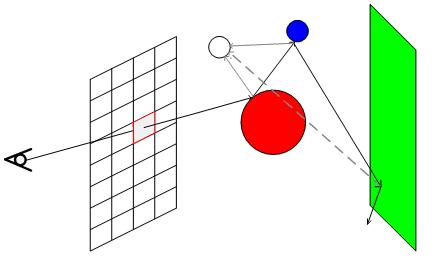
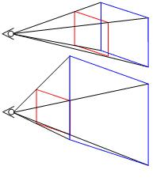
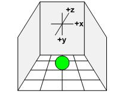
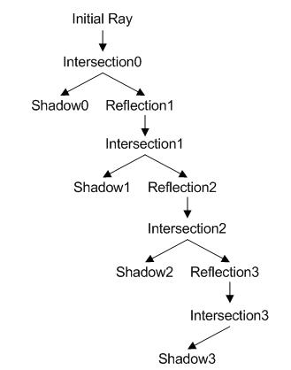
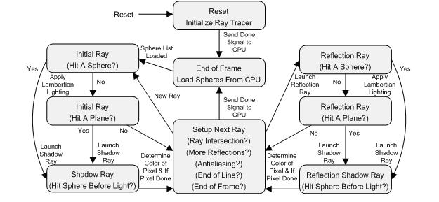
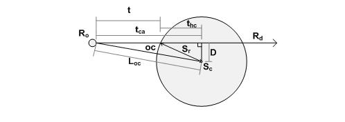
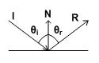

|
FPGA Ray Tracer |
The idea for our project came from Prof. Land's lectures on ray tracing. Ray tracing is very well suited for FPGA's where many calculations can proceed in parallel. Spheres allow quite interesting scenes to be drawn, especially when reflections are added. We found that once we had implemented sphere rendering, adding planes was easier because fewer calculations were needed and we had existing experience and states in place to do the required calculations, reflections, and shadowing. Ray Tracing  Figure 1 Figure 1 shows an example of a ray tracing through a scene. The initial ray leaves the eye in a direction such that it passes through one of the pixels in the screen. It then collides with the red sphere. A shadow ray is shot towards the light source; since that shadow ray reaches the light source, the intersection point on the red sphere would be lit, and is not shadowed. A reflection ray is then shot towards blue sphere, getting its direction from a specular reflection. Next, a shadow ray is shot to the light source, which again makes it without obstruction and so the blue sphere is lit at the intersection point. Then another reflection ray is shot from the blue sphere intersection point towards the green plane, which it hits. The shadow ray from this point, however, is blocked by the red sphere and so that point on the green plane is in shadow. The reflection ray from the green plane then leaves the scene without hitting another object so the tracing for that pixel is completed. Its color is the sum of the lit red sphere color, the product the red sphere reflectivity and the lit blue sphere color, and the product of red and blue sphere reflectivity's and the shadowed green plane color. The tracer would then repeat the process for the next pixel in the scene (or another ray for that pixel if anti-aliasing is used). Since each ray must check for intersections with every object in the scene, the processing time increases significantly with a large number of objects. However, since pixel is independent of each other, they can be processed in parallel if the hardware is available.   Figure 2 and Figure 3 Figure 2 shows the affects of varying the distance from the eye to the screen on the viewing frustum. While you can see a wider angle and more of the scene with the screen close, the pixel density goes down, which can cause pixels to miss objects they would had previously hit. Also, when the screen is too close to the eye, objects become skewed, where spheres get stretched into ovals as they are farther from the center of the screen. The tradeoff is how much of the scene you see with how much detail you see. Our coordinate system and sample scene setup are shown in figure 3. Depth is in the Z direction. Because we use 12.12 two's complement fixed point numbers, each coordinate is limited to between -2048 and +2047 (considering the 12 integer bits only). For scenes with planes, we use the configuration shown so that we can get reflections all around the spheres while still being able to see the scene.  Figure 4 Our ray decision tree is shown in figure 4. Each ray that intersects with an object shoots a shadow ray and possibly a reflection ray depending on the switches and weight given to the reflection ray to be launched. If less than 1% of the light is going to be reflected, we don't launch a reflection ray. We also impose the restriction of a maximum of three reflection rays to limit the time spent per pixel.  Figure 5 A shadow ray was launched towards the light source. Again, the shadow ray checked the sphere list for an intersection, but only spheres closer than the light source were counted as actual intersections. Because spheres must be in front of planes, the plane list was not checked to see if a plane cast a shadow on a sphere. At this point, the pixel has an initial color, it is either black because
it missed all objects, the color of the intersected object, or the color
of the intersected object with a shadow. For shadows, we halved the color
of the intersection object to allow for some ambient lighting affects.
For the Lambertian/cosine shading, the dot product of the normalized normal
with the normalized vector from the intersection point to the light source
was multiplied by the object's color. Because both vectors were normalized,
the dot product produces a scaling factor between 1 and 0. We offset the
resulting color by the completely shadowed color and made sure the resulting
color did not overflow when the offset was added to the color with a saturating
addition. Sphere Background Math [1]  Figure 6 Rorigin = Ro = [ Xo Yo Zo ]Rdirection = Rd = [ Xd Yd Zd ] R(t) = Ro + Rd * t Rintersection = Ri = [ Xi Yi Zi ] = [ Xo + Xd * t Yo + Yd * t Zo + Zd * t ] Rnormal = Rn = [ Xn Yn Zn ] = [ (Xi – Xc)/Sr (Yi – Yc)/Sr (Zi – Zc)/Sr ] t = intersection distance D2 = L2oc – tca2 t2hc = Sr2 – D2 = Sr2 - L2oc + tca2 OC = Sc - Ro L2oc = OC · OC tca = OC · Rd Scenter = Sc = [ Xc Yc Zc ] Sradius = Sr Ssurface = Ss = [ Xs Ys Zs ] Sr2 = (Xs – Xc)2 + (Ys – Yc)2 + (Zs – Zc)2 This final equation gives us the implicit equation for a sphere. We can
test points to see if they in fact lie on the sphere's surface. The algebraic
solution is as follows. By substituting X(t), Y(t), and Z(t) in the form
of You can then solve the quadratic equation for t and find the closet intersection point, if any. However, we chose to use a faster geometric solution to the intersection problem which delays the square root of the quadratic equation and offers checks to bail out of the calculations sooner if an intersection is impossible. First we check if the ray originates inside the sphere by calculating
a vector from the ray origin to the center of the sphere and its magnitude:
If L2oc is less than Sr2, then we know the ray originated inside the sphere. If the ray originates inside any sphere, we chose to color the pixel black and move on because no light penetrates our spheres. (Note this is not true of shadow rays because they may originate (Ri) under the surface due to the limited precision of our calculations and we ignore the result of this comparison for shadow rays.) Next we calculate the distance from the origin to the point along the
ray that is closest to the sphere's center. Following that comparison, we next calculate the half cord distance squared,
where the half chord distance is the distance from the point found by
tca and the surface of the sphere. D2 = L2oc + tca2 If t2hc is negative, the ray misses the sphere.
We then calculate the intersection distance. Rn = [ (Xi – Xc)/Sr (Yi – Yc)/Sr (Zi – Zc)/Sr ] We check all spheres in the sphere list in order to find the closest intersection if there is more than one. All direction vectors are normalized in our calculations to simplify and reduce the number of calculations required. This also helps prevent overflowing when we determine the magnitude of vectors by limiting the size of the result. The inverse radius and radius squared are precomputed and stored in the sphere list to save calculation time at the expense of memory/register usage. Plane Background Math [1] Rdirection = Rd = [ Xd Yd Zd ] R(t) = Ro + Rd * t Rintersection = Ri = [ Xi Yi Zi ] = [ Xo + Xd * t Yo + Yd * t Zo + Zd * t ] Rnormal = Rn = [ Xn Yn Zn ] = [ (Xi – Xc)/Sr (Yi – Yc)/Sr (Zi – Zc)/Sr ] P = A * x + B * y + C * z + D = 0 A2 + B2 + C2 = 1 D = - Pn · point, distance from [0 0 0] Pnormal = Pn = [A B C] Planes, in comparison, require fewer calculations to determine if there
is a ray intersection. We start with the implicit equation for a plane. t = - (Pn · Ro + D) / Pn · Rd t = vo / vd , where vo = - (Pn · Ro + D) and vd = Pn · Rd We calculate the denominator first. If vd equals zero, the ray is parallel to the plane and we can disregard it. Likewise if vd is positive, the normal is pointing away from the plane, and we disregard it in our rendering. This is done so that planes cannot block spheres. If we move the origin behind a plane, it is simply not drawn. This gives the affect of it being a one way mirror. When behind it, it appears to be not there but when in front, it acts as a normal surface (mirrored if the reflection is not zero). Next, we calculate the numerator vo and then t. Reflections [1]  Figure 7 θincident = θi
= θreflected = θr Physics tells us that the above two statements are true; the angle of
incidence equals the angle of reflection, and the reflection vector is
a linear combination of the incident and normal vectors. This can be transformed
into a useable equation by the following: - I · N = N · R - I · N = α(N · I) + β If we set α = 1, β = - 2*(N · I). Substituting into our physical law, we get that, R = I – 2*(N · I)*N
The resulting reflection vector R is also normalized when the incident
vector I and the normal vector N are also normalized. Software/Hardware Tradeoff |
|||||||